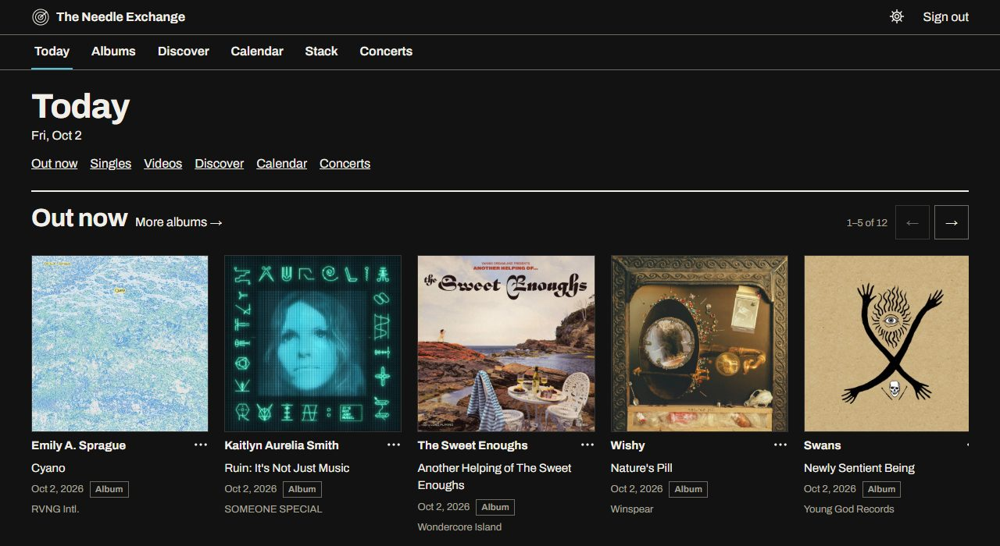
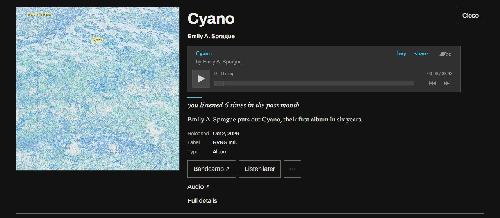
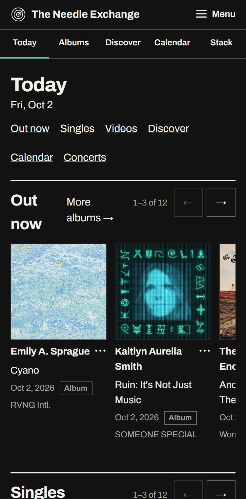
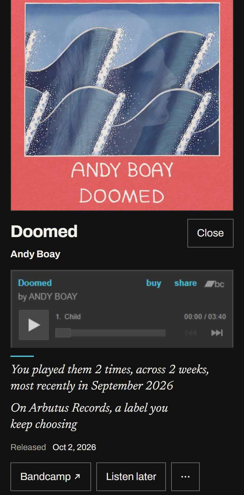
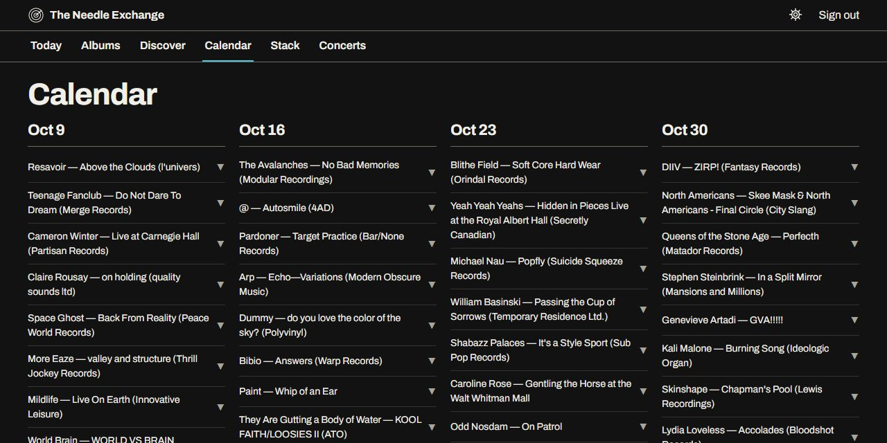

What it is
Streaming services had the right idea: use what someone really listens to to work out what they would want next. Then the idea was corrupted — paid playlist slots, rankings nobody can inspect, AI filler. This is the same idea without any of that. It reads your listening, tells you what is new from the artists you play, and shows its working.
It hosts no music and sells none. It points you at the artist’s own page, and when someone buys there, the artist and label are paid.

Three parts. The first two work today. The third is designed and comes after.
- Reads your Last.fm listening, plus a Spotify history export if you have one.
- Works out which artists and labels matter to you, and watches their pages for you: Bandcamp for releases, YouTube for videos and live sessions.
- New albums, new singles, videos and live sessions, and a release calendar.
- A page you can finish, not a firehose.
- Upcoming concerts for the artists you play, in a city you choose.
- Pulled from the artists you play, their record labels, their bands and side projects, and similar artists.
- Two rows: more of what you have been playing lately, and artists adjacent to listening you have left alone for a while.
- Rows run short rather than pad themselves out.
- Hiding a record or an artist changes what you are shown. It teaches the app nothing about your taste.
- An Exchange: strictly between two people. A friend’s listening can nudge your Discovery, and the card says whose.
- Groups: small, private, invitation link only.
- No chat, no counts, no read receipts. You never learn who saw what.
- Nobody can find out who is in an Exchange or a Group, or how many.
How it works with Bandcamp
My aim is for this to feed Bandcamp, not compete with it.
Most of what it surfaces is a release on a Bandcamp artist or label page. It reaches the people most likely to care: listeners who already play that artist, or whose listening sits right next to it. Then it sends every one of them to Bandcamp to listen and to buy.
It has no checkout, no catalogue of its own and no audio. The only way to buy anything through it is Bandcamp’s own button.
What it does
- Finds new releases on the Bandcamp pages of artists and labels a listener plays, and tells that listener when one lands, so a fan does not miss a record.
- Surfaces Bandcamp artists a listener has not met yet, through the labels they already follow and the other bands of artists they play.
- Links every Bandcamp release to its Bandcamp page.
- Plays a release through Bandcamp’s own embedded player, with its buy button.
- Reads each followed page once for everybody, not once per listener.
What it does not do
- Host, copy or re-stream any audio.
- Stand in for the artist’s page, sell music, or take a cut of a sale.
- Show ads, or sell a place in anyone’s feed.
- Train any model on what it reads from Bandcamp. It trains no models at all.
Where things stand with Bandcamp
Until now the app has read Bandcamp’s public pages and endpoints directly, because there is no public API. I have paused all of it until Bandcamp says how it would like this done. It is a single switch, off by default, and turning it back on is a deliberate change on my side. A listener’s own browser still loads Bandcamp’s player and links, because those are the listener’s requests, not mine.
What I would like to work out with you
- How pages should be read. Which endpoints, how often, or an official feed or API if one exists. I will follow whatever you set.
- A referral tag on every outbound link, so you can see exactly what this sends you. Tell me the form you want.
- A way for an artist or label to opt out. If one asks to be left off, they are removed.
- How Bandcamp should be credited and linked. Today the link says “Bandcamp” and the player is yours.
- Concert dates. The shows Bandcamp relays link out to Songkick. I would rather link them to the artist’s Bandcamp page, or drop them, if you prefer.
It is a small alpha, so I have no numbers to show you yet. What I can show you is exactly where every listener is sent.
Every card says why
If the app cannot say why something reached you, it does not reach you.
Each card carries the reason in a plain sentence, put together from records the app actually holds: how often you played the artist, over how long, which label you keep coming back to. If a fact is not in the data, that part of the sentence does not appear.




The AI question
What a language model does here
A model is used in a small number of places, as a librarian. It answers narrow questions about things already found: is this label’s catalogue curated, are these two artist credits the same act, and which known release is this candidate. Each answer is a typed verdict attached to its evidence, and each can be overruled by hand.
It never writes anything you read. Every sentence on a card is assembled from templates over stored facts. It never finds a release; a plain program reading an artist’s page does that. It never ranks or recommends. It makes no music and no images.
A test fails the build if the Bandcamp connector imports the model module, and none of the code that reads Bandcamp uses it. That wall is the thing I least want to see erode, so I made it noisy.
What it will never do
Only listening decides what the app thinks you like. Hiding a record or muting an artist changes what is shown, never what it believes about your taste.
The ranking measures your own listening: how much you have played an artist, how recently and how consistently. Nobody can pay to appear.
No generated descriptions, summaries or headlines, and no invented comparisons between bands.
No chat, no follower or friend counts, no streaks, no public feed, and no way to see whether someone opened or played what you sent.
What it reads, and why
Every field the app takes from Bandcamp, YouTube and MusicBrainz, how it is taken, why, and what it feeds.
This is how the app has read these sources. Its reading of Bandcamp is paused (see Two), and would resume only the way Bandcamp agrees to.
| What it reads | How | Why | How it is used |
|---|---|---|---|
| Bandcamp | |||
| The page’s own band id and name | Bandcamp’s public name search, or the band id an artist page states about itself, when a listener’s artist needs a page to follow. | To follow the right page. A name alone can belong to several artists. | The band id is the identity of a followed page. Everything below is read per band id. |
| Discography listing: release id, album or track, title, cover id, release date, band name | One request per followed page when it is polled, to the mobile-app band endpoint. Once a night, plus a late-morning pass for artists with a release due or just out. About one request a second; on any resume I would slow that to one every three seconds, or whatever Bandcamp prefers. | To notice that something new exists. | A new item becomes a candidate release, and nothing reaches a listener until the later checks pass. The page is read once for everybody, not once per listener. |
| Release details: label, pre-order flag, tags, the release’s own artist, title, track list with durations, whether any track streams | One request per new release, to the mobile-app release endpoint, stored whole. A release still on pre-order is re-checked on later nights until it goes live. | To credit the right artist (a side project can sit on another band’s page), to tell a single from an EP or an album by runtime and track count, and to know whether a player can play it. | Shown on the card: title, label, type, date. Used to keep singles off the calendar and to decide when a play button is offered. |
| Upcoming shows: city, venue, date, ticket link | Carried in the same band response as the discography. No extra request. | To list concerts for artists a listener plays. | Shown only for artists the listener plays, in the city the listener chose, linking out to the ticket page (Songkick data that Bandcamp relays). |
| Artist photo id | Carried in the same band response, no extra request. Where Bandcamp has no photo, Deezer’s, by the artist id MusicBrainz lists. | To put a face on a Discovery card for an artist. | Shown on Discovery artist cards. |
| Cover art and the player | The app stores the cover’s address, not the image. The listener’s browser loads the cover and Bandcamp’s embedded player from Bandcamp. | So that listening and buying happen on Bandcamp. | Covers on every card. The player, with its own buy button, in an opened card. |
| Bandcamp’s public search and its public HTML pages | The same search suggestions the site’s own search box uses, and plain reads of artist and release pages, including a label’s discography. | To find a release’s page, cover and canonical address, and to confirm a page belongs to the artist. | Gives a release its Bandcamp link and cover, and keeps a follow attached to the right page. Paused with everything else. |
| YouTube | |||
| An artist’s channel | The channel MusicBrainz lists for the artist, the Data API’s search for the artist’s auto-generated “Topic” channel, or its channels lookup to resolve an @handle in a curated import. | To follow the place an artist’s videos, live sessions and official audio appear. | A followed channel is polled for new uploads. |
| New uploads: video id, title, published time | The channel’s public uploads feed, and the Data API’s playlist listing when a longer look back is needed. | To notice a new video or a live session. | A new upload becomes a candidate, then goes through the checks below. |
| Video details: title, album, track artist, label, distributor, release date, description, thumbnail, duration, category, vertical-format flag, embeddable and region limits | The Data API’s video lookup, in batches of up to 50. | To tell an official audio upload from a music video or a session, to refuse vertical short-form video, and to offer play only where YouTube will embed it. | Sets the card’s type and credit, filters what is served, and decides whether the in-page player is offered. The player itself is YouTube’s, loaded by the listener’s browser. |
| MusicBrainz | |||
| An artist’s MusicBrainz id | Taken from the listener’s scrobble data when present, otherwise found by name search. | Names collide. An id does not. | The anchor for everything else MusicBrainz is asked about that artist. |
| Artist detail: official-page links (Bandcamp, YouTube, Deezer), links to other artists (members, side projects, same act), area, country, type | One lookup per artist, no faster than one request every two seconds, and cached. | To follow an artist’s own official page rather than a search’s best guess, and to find their other bands. | Attaches a follow to the right Bandcamp or YouTube page. Feeds Discovery’s “their bands and side projects”. |
| Release-group chronology: an artist’s records with dates and types | Read with the artist detail, and cached. | To know what a record is in an artist’s history. | Lets a card say “their first album in six years” only when that is a fact. Helps tell a new release from a reissue. |
| Release lookups: label and track list | One lookup per release being checked, cached. | To check a release is what it claims to be, and to name its label. | Supports the rule that compilations, reissues and catalogue editions are never shown. |
| Label rosters: a label’s artists and records | One lookup per label, cached. | To know which artists a label puts out. | Behind Discovery’s “on a label you keep choosing”. |
Three other things come in. From Last.fm: the listener’s plays, by username, and public artist data (similar artists, tags, name corrections). A Spotify history file the listener uploads, which is deleted after its plays are read. And Deezer, iTunes Search and the Cover Art Archive, for covers and artist photos, with Deezer also used to check a record’s credited artist.
Where it stands
It is a small, invitation-only alpha. It is not open to the public and is not yet hosted anywhere public.
| Part | State |
|---|---|
| News feed | Working Albums, singles, videos and live sessions, ranked by your own listening. (New Bandcamp releases paused, see Two.) |
| Release calendar | Working Upcoming albums by release week. |
| Discovery | Working Two rows, each card with its reasons. |
| Concerts | Working Upcoming shows for artists you play, in a city you pick. (New Bandcamp dates paused, see Two.) |
| Listen later and hide | Working |
| Reading Bandcamp pages | Paused Off until Bandcamp says how it would like this done. |
| Public hosting | In progress It runs on my own hardware today. |
| Exchanges and Groups | Designed, not built |